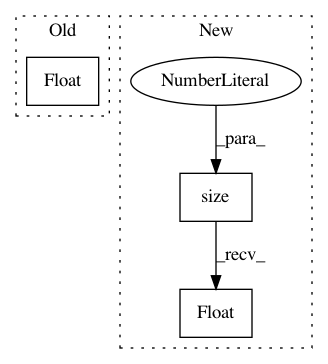

c9737e886e2e1abfd215969bbaaf8fc9737851f2,bindsnet/network/topology.py,Connection,compute,#Connection#,168
Before Change
decaying spike activation).
// Compute multiplication of spike activations by weights and add bias.
post = s.float().view(s.size(0), -1) @ self.w + self.b
return post.view(s.size(0), *self.target.shape)
def update(self, **kwargs) -> None:
After Change
if self.b is None:
post = s.view(s.size(0), -1).float() @ self.w
else:
post = s.view(s.size(0), -1).float() @ self.w + self.b
return post.view(s.size(0), *self.target.shape)
def update(self, **kwargs) -> None:
In pattern: SUPERPATTERN
Frequency: 3
Non-data size: 3
Instances
Project Name: BindsNET/bindsnet
Commit Name: c9737e886e2e1abfd215969bbaaf8fc9737851f2
Time: 2020-11-17
Author: simoncaby28@gmail
File Name: bindsnet/network/topology.py
Class Name: Connection
Method Name: compute
Project Name: ncullen93/torchsample
Commit Name: 943753c968fe7c0cbafc6e44d60f1b28b42e997b
Time: 2017-05-03
Author: ncullen.th@dartmouth.edu
File Name: torchsample/utils.py
Class Name:
Method Name: th_affine2d
Project Name: Zhaoyi-Yan/Shift-Net_pytorch
Commit Name: bcbef3267f372186f457b9c22feec249bd85b2f6
Time: 2018-12-14
Author: yanzhaoyi@outlook.com
File Name: util/util.py
Class Name:
Method Name: cal_feat_mask